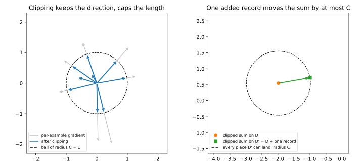
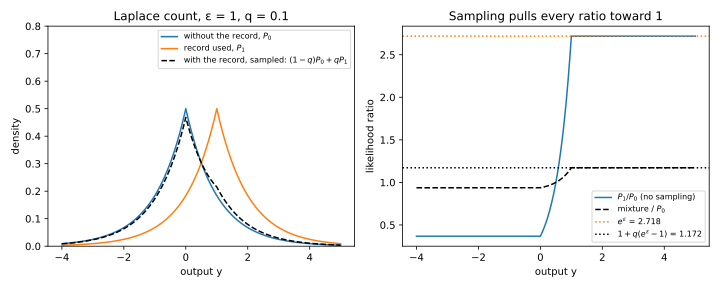
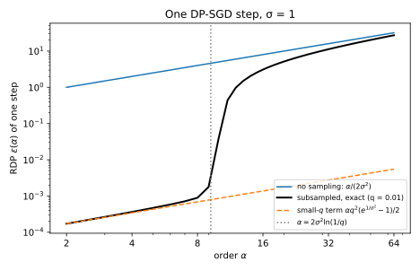
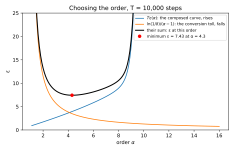
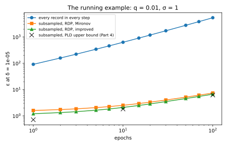

Appendix C — Accounting for DP-SGD
This appendix follows one training run from the clipped gradient to its final guarantee of differential privacy (DP). The run is stochastic gradient descent (SGD) with per-example clipping and Gaussian noise, called DP-SGD. A training algorithm is differentially private when adding or removing one record changes the probability of any set of outcomes by at most a factor \(e^\varepsilon\), plus a small slack \(\delta\). The sensitivity of a computation is the most that one record can move its result. The Gaussian mechanism adds normal noise to such a result, and its privacy depends only on the sensitivity divided by the noise’s standard deviation. Appendix Section A.7 derives its exact guarantee, and Section B.4 derives the Rényi divergence, which adds up the cost of many steps. This page restates both where it uses them.
The sections take the questions in the order a training run raises them, and every number uses the book’s running example. It trains on 10,000 records for 100 epochs, with random batches of 100 records on average, and reports its guarantee at \(\delta = 10^{-5}\). Table C.1 maps each section to the chapter sections that use its formula.
| Section | Formula it derives | Used in |
|---|---|---|
| Section C.1 | the clipped sum has sensitivity \(C\) | Section 39.1, Section 39.5, Section 33.2 |
| Section C.2 | one step has ratio \(1/\sigma\); \(T\) unsampled steps have \(\sqrt T/\sigma\) | Section 39.1, Section 39.3, Section 20.4 |
| Section C.3 | \(\varepsilon' = \ln\big(1 + q(e^\varepsilon - 1)\big)\) | Section 33.1 |
| Section C.4 | the binomial sum for the subsampled Gaussian’s Rényi curve | Section 33.3, Section 33.4, Equation 39.4 |
| Section C.5 | \(\varepsilon = \min_\alpha\big[T\varepsilon(\alpha) + \ln(1/\delta)/(\alpha - 1)\big]\) | Section 33.5, Section 29.6, Section 37.2 |
Two datasets are neighbours when one of them is the other with one record added. Write \(D\) for a dataset and \(D' = D \cup \{x\}\) for the same dataset with the record \(x\) added. The book uses this add/remove relation for DP-SGD because DP-SGD draws its batches by an independent coin flip for each record, so adding a record simply adds one more coin (Section 18.1, and Section C.3).
C.1 Clipping gives the sum a sensitivity
C.1.1 The question
The noise has to hide any one record’s contribution, so you need a bound on how far one record can move the sum of gradients. But nothing about the model bounds the length of a gradient. A mislabelled record far from the decision boundary can have a gradient a thousand times longer than a typical one. How do you get a bound that holds for every model and every record?
C.1.2 The answer
Write \(g_i\) for the per-example gradient of record \(i\), the gradient of that record’s own loss at the current weights. Clipping rescales each one so that its length is at most a number \(C\) that you choose, the clipping norm. The rescaling keeps the direction and caps the length: \[\bar g_i = g_i\min\Big(1, \frac{C}{\|g_i\|}\Big), \qquad \bar G(D) = \sum_{i \in D}\bar g_i. \tag{C.1}\] Here \(\|g_i\|\) is the Euclidean length of the gradient and \(\bar G(D)\) is the clipped sum over the records of a dataset \(D\). Its \(\ell_2\) sensitivity is the largest length of \(\bar G(D') - \bar G(D)\) over neighbouring datasets, and it is \[\Delta_2 \bar G = C \quad\text{under add/remove}, \qquad \Delta_2 \bar G = 2C \quad\text{under replace-one}. \tag{C.2}\] Under replace-one, the other common relation, neighbouring datasets differ in the value of one record.
C.1.3 A worked example
Take \(C = 1\) and a dataset \(D\) of two records with two-dimensional gradients. The first is \((3, 4)\), of length 5, so clipping divides it by 5 and gives \((0.60, 0.80)\). The second is \((0.3, -0.4)\), of length 0.5, which is shorter than \(C\) and stays as it is. The clipped sum is \(\bar G(D) = (0.90, 0.40)\).
Now add a third record \(x\) with gradient \((-2.4, 0.7)\), of length 2.5. Clipping divides it by 2.5 and gives \((-0.96, 0.28)\), so \(\bar G(D') = (-0.06, 0.68)\). The sum moved by exactly the new record’s clipped gradient, of length \(\sqrt{0.96^2 + 0.28^2} = 1.00\), which is \(C\).
Under replace-one, change the first record’s gradient from \((3, 4)\) to \((-3, -4)\) instead. Its clipped term goes from \((0.60, 0.80)\) to \((-0.60, -0.80)\), so the sum becomes \((-0.30, -1.20)\). It moved by \((-1.20, -1.60)\), of length 2.00, which is \(2C\).
C.1.4 Why it works
- A clipped gradient has length at most \(C\). If \(\|g_i\| \le C\), the factor \(\min(1, C/\|g_i\|)\) is 1 and the gradient is unchanged. Otherwise the factor is \(C/\|g_i\|\), and the length becomes \(\|g_i\| \cdot C/\|g_i\| = C\). Either way \(\|\bar g_i\| \le C\), and the direction stays the same because the factor is positive.
- The other records’ terms do not change. Each record’s gradient depends only on that record and on the current weights. The weights come from the earlier noisy steps, which are already released, so adding \(x\) leaves every other term of the sum as it was.
- Add/remove: the sum moves by one clipped gradient. By step 2, \(\bar G(D') - \bar G(D) = \bar g_x\), and by step 1 its length is at most \(C\). That is the first half of Equation C.2.
- Replace-one: the sum moves by a difference of two. If record \(x\) is replaced by \(x'\), the sum moves by \(\bar g_{x'} - \bar g_x\). By the triangle inequality, the length of a difference is at most the sum of the lengths, here \(C + C = 2C\). The worked example reaches \(2C\), because two gradients that point in opposite directions give the largest difference.
Nothing in these steps used the loss, the architecture or the data, so clipping gives a sensitivity for every model.
C.1.5 Checking it
The script draws 20,000 random datasets of five two-dimensional gradients, with lengths often far above \(C\), and a random new record for each. The largest change of the clipped sum is \(1.0000\,C\) when the record is added and \(2.0000\,C\) when it replaces another, so both bounds are reached and neither can be improved. Figure C.1 shows why: adding one record moves the clipped sum by that record’s clipped gradient, so the new sum lands inside a circle of radius \(C\) around the old one.

C.1.6 Recipe and pitfalls
Clip every per-example gradient to a norm \(C\) that is fixed before training, and the sum has sensitivity \(C\) under add/remove. The clipping norm is not a privacy parameter, because the next section sets the noise to \(\sigma C\), so a larger \(C\) brings more noise in the same proportion. It affects only accuracy, which Section 39.2 studies.
Implementations break the argument at step 2, which needs each term of the sum to depend on one record only. Batch normalization makes each record’s gradient depend on the other records in the batch, so one record can move every term. A clipping norm computed from the current batch, such as its median gradient length, makes the noise level depend on the data, so the noise itself can reveal something about the records.
Two other cases double the sensitivity to \(2C\): the replace-one relation, and clipping the mean gradient of a microbatch, a group of records. That mean has length at most \(C\) before and after one member is added, and the two vectors can point in opposite directions (Section 39.5). In both cases you must tell the program that adds up the privacy cost, the accountant, because it assumes \(C\) (Section 33.2).
C.2 One noisy step is a Gaussian mechanism
C.2.1 The question
Each step releases the clipped sum plus noise. How much noise makes that one step private, and what do the rest of the update and the later steps cost?
C.2.2 The answer
DP-SGD adds normal noise to the clipped sum, independently in every coordinate, with standard deviation \(\sigma C\). The number \(\sigma\) is the noise multiplier, the noise’s standard deviation in units of the sensitivity. So step number \(t\) of training releases \[G_t = \bar G + \xi_t, \qquad \xi_t \sim \mathcal N(0, \sigma^2C^2I), \tag{C.3}\] where the identity matrix \(I\) says that the noise \(\xi_t\) has the same spread in every direction.
A Gaussian mechanism is described by one ratio, the sensitivity divided by the noise’s standard deviation, which the book calls \(\mu\). For one step it is \[\mu = \frac{\Delta_2 \bar G}{\sigma C} = \frac{C}{\sigma C} = \frac1\sigma. \tag{C.4}\] A larger ratio means that the two output distributions overlap less, so an observer tells them apart more easily. The exact \(\delta\) at a given \(\varepsilon\) is the probability mass where the distribution with the record exceeds \(e^\varepsilon\) times the one without it. For ratio \(\mu\) this mass gives the condition \[\delta \ge \delta_\mu(\varepsilon) = \Phi\Big(\frac\mu2 - \frac\varepsilon\mu\Big) - e^\varepsilon\,\Phi\Big(-\frac\mu2 - \frac\varepsilon\mu\Big), \tag{C.5}\] where \(\Phi(z)\) is the probability that a standard normal variable is at most \(z\) (Section 20.4, and Section A.7 for a derivation from scratch). Without sampling, every record is used in every step, and the \(T\) steps of a run act together like one Gaussian mechanism with ratio \[\mu_T = \frac{\sqrt T}{\sigma}. \tag{C.6}\]
C.2.3 A worked example
Take \(\sigma = 1\), so one step has \(\mu = 1\). Solving Equation C.5 for \(\delta = 10^{-5}\) gives \(\varepsilon = 4.38\) for a single step, which is already a large privacy cost. If every record is used in each step, the cost grows quickly: 100 steps have \(\mu_T = \sqrt{100} = 10\) and \(\varepsilon = 91.82\), and the running example’s 10,000 steps have \(\mu_T = 100\) and \(\varepsilon = 5425.51\). The next two sections show how random batches bring this down to single digits.
The full-batch row of Table 39.4 in the DP-SGD chapter uses the whole dataset as every batch, so its 100 epochs are 100 steps, and for a target of \(\varepsilon = 4\) it uses \(\sigma = 10.8\). So \(\mu_T = \sqrt{100}/10.8 = 0.926\), and the script gives \(\varepsilon = 4.005\), the target up to the rounding of \(\sigma\).
C.2.4 Why it works
- Only the ratio matters. The noisy sums on \(D\) and on \(D'\) are normal distributions with the same spread, centred \(s\) apart, where the shift \(s\) is the length of \(\bar G(D') - \bar G(D)\). Rotate the space so that this shift lies along the first axis. The rotation leaves the noise unchanged, because the noise has the same spread in every direction. Every other coordinate then has the same noise on both datasets and tells an observer nothing. What is left is \(\mathcal N(0, \sigma^2C^2)\) against \(\mathcal N(s, \sigma^2C^2)\). A division of the output by \(\sigma C\) changes no probability of any event, so this is the pair \(\mathcal N(0, 1)\) against \(\mathcal N(s/(\sigma C), 1)\).
- The worst shift gives ratio \(1/\sigma\). By Section C.1 the shift is at most \(C\), so the ratio is at most \(C/(\sigma C) = 1/\sigma\). A smaller ratio is never less private, because the two distributions then overlap more. The clipping norm cancels here, which is why it is not a privacy parameter.
- The rest of the update is free. The learning rate, the division by the expected batch size \(B\), momentum, Adam and the new weights are all computed from \(G_t\) and from earlier released values, without looking at the data again. Such post-processing cannot reveal more than its input, because an attacker who sees \(G_t\) could run the same computation herself (Section 19.1).
- Unsampled steps add up like one Gaussian. The privacy loss of an output \(y\) is the logarithm of how much more likely \(y\) is on \(D'\) than on \(D\). For the pair \(\mathcal N(\mu, 1)\) against \(\mathcal N(0, 1)\), the loss is \[\ln\frac{e^{-(y - \mu)^2/2}}{e^{-y^2/2}} = \mu y - \frac{\mu^2}2. \tag{C.7}\] With \(y \sim \mathcal N(\mu, 1)\), this is a normal variable with mean \(\mu^2/2\) and variance \(\mu^2\). Each step draws fresh noise, so over \(T\) steps the likelihood ratios multiply and the losses add. Each step’s loss has this same distribution whatever happened before, so the sum is normal with mean \(T\mu^2/2\) and variance \(T\mu^2\), which is the loss of one Gaussian mechanism with ratio \(\sqrt T\mu = \sqrt T/\sigma\). The \(\delta\) for a given \(\varepsilon\) depends only on the distribution of the loss, so the two have the same guarantee (Section B.3 proves this in full).
C.2.5 Checking it
The full-batch example confirms step 4, because the chapter solved its row for 100 composed steps, while here they are one Gaussian with \(\mu_T = 10/\sigma\), and both give \(\varepsilon\) of about 4. The script solves Equation C.5 by bisection with logarithms, because at \(\mu_T = 100\) both terms underflow to zero in ordinary arithmetic. Its value at 10,000 steps agrees with the one quoted in Amplification by subsampling.
C.2.6 Recipe and pitfalls
Set the noise to \(\sigma C\), and one step is a Gaussian mechanism with ratio \(1/\sigma\), whatever \(C\) is. Keep everything after the noise a function of the noisy sum and of public numbers. Do not divide by the number of records actually in the batch, because that count depends on the data. Divide by the expected batch size \(B\) instead, which is public. Never compose unsampled steps for a long run, because \(\varepsilon\) grows at least like the average privacy loss \(\mu_T^2/2 = T/(2\sigma^2)\) and reaches the thousands.
C.3 Random batches make each step cheaper
C.3.1 The question
DP-SGD does not use every record in every step. Each step draws a random batch, and with \(q = 0.01\) your record is in it only one time in a hundred. How much cheaper is a step that probably did not see you?
C.3.2 The answer
Under Poisson sampling, each record enters the batch by its own coin flip, independently of the others, with probability \(q\), the sampling rate. If a step is \(\varepsilon\)-DP on whatever batch it is given, then the step run on a Poisson sample is \(\varepsilon'\)-DP under add/remove, with \[\varepsilon' = \ln\big(1 + q(e^\varepsilon - 1)\big). \tag{C.8}\] This is amplification by subsampling. When \(\varepsilon\) is small, \(e^\varepsilon - 1\) is close to \(\varepsilon\), and the logarithm of a number close to 1 is close to that number minus 1. So for small \(\varepsilon\) \[\varepsilon' \approx q\varepsilon, \tag{C.9}\] and the step becomes about \(1/q\) times cheaper. When the step also has a slack \(\delta\), the same argument shrinks that slack to \(q\delta\) (Equation 33.8).
C.3.3 A worked example
Take \(q = 0.01\) and a step with \(\varepsilon = 1\). Then \(e - 1 = 1.71828\), so \(1 + q(e^\varepsilon - 1) = 1.017183\) and \(\varepsilon' = \ln 1.017183 = 0.017037\). The step costs about 0.017 instead of 1, close to \(q\varepsilon = 0.01\). Table C.2 shows how the saving shrinks for larger \(\varepsilon\).
| Base \(\varepsilon\) | 0.1 | 1 | 5 | 10 |
|---|---|---|---|---|
| Sampled \(\varepsilon'\), \(q = 0.01\) | 0.0011 | 0.0170 | 0.9059 | 5.3993 |
| \(q\varepsilon\) | 0.0010 | 0.0100 | 0.0500 | 0.1000 |
C.3.4 Why it works
With probability \(1 - q\) your record is not used, and then the output has exactly the distribution it would have without you. So every likelihood ratio becomes a weighted average of 1, with weight \(1 - q\), and the old ratio, with weight \(q\). For example, if an output has probability \(p\) without your record and \(3p\) when your record is used, then under sampling at \(q = 0.01\) it has probability \(0.99p + 0.03p = 1.02p\) with you in the dataset. The ratio falls from 3 to 1.02. The general proof takes six steps.
- Fix everyone else’s coin. Let \(U\) be the set of other records that were drawn. Each record has its own coin, so given \(U\), record \(x\) is drawn with probability \(q\), independently of \(U\).
- Write both outputs given \(U\). Let \(P_0\) be the output distribution of the step run on \(U\), and \(P_1\) that of the step run on \(U \cup \{x\}\). On \(D\) the output is drawn from \(P_0\). On \(D'\) it is drawn from \(P_0\) when the coin of \(x\) says no, and from \(P_1\) when it says yes. So for every set of outputs \(S\), \[P_{D'}(S \mid U) = (1 - q)P_0(S) + qP_1(S). \tag{C.10}\]
- Use the step’s own guarantee. The sets \(U\) and \(U \cup \{x\}\) are neighbours, and the step is \(\varepsilon\)-DP, so \(P_1(S) \le e^\varepsilon P_0(S)\) for every \(S\).
- Put it into the mixture. Replacing \(P_1(S)\) by the larger \(e^\varepsilon P_0(S)\) gives \[P_{D'}(S \mid U) \le (1 - q)P_0(S) + qe^\varepsilon P_0(S) = \big(1 + q(e^\varepsilon - 1)\big)P_0(S). \tag{C.11}\]
- Average over \(U\). Both datasets draw the other records’ coins with the same probabilities. The bound of step 4 holds for every \(U\) with the same factor, so it also holds for the averages over \(U\). This is Equation C.8 in the direction “\(D'\) against \(D\)”.
- Check the other direction. DP also needs \(P_D(S) \le e^{\varepsilon'}P_{D'}(S)\). The step’s guarantee holds with either dataset first, so it also gives \(P_1(S) \ge e^{-\varepsilon}P_0(S)\), and the mixture is at least \((1 - q + qe^{-\varepsilon})P_0(S)\). Dividing, \(P_0(S) \le P_{D'}(S)/(1 - q + qe^{-\varepsilon})\). To compare the two factors, write \(a = e^\varepsilon\) and multiply out: \[\big(1 - q + q/a\big)\big(1 + q(a - 1)\big) = 1 + q(1 - q)\frac{(a - 1)^2}{a} \ge 1. \tag{C.12}\] So \(1/(1 - q + qe^{-\varepsilon}) \le 1 + q(e^\varepsilon - 1)\), and this direction is never the worse one.
C.3.5 Checking it
The script tests the bound on a count with Laplace noise, whose density falls like \(e^{-\varepsilon|y - \text{count}|}\), with \(\varepsilon = 1\). Adding the record moves the count by 1, so the density ratio between “used” and “not used” ranges from \(e^{-1}\) to \(e\). On a grid of outputs at \(q = 0.01\), the mixture’s largest log ratio, with the record against without it, equals the 0.017037 of the worked example, so the bound is reached and cannot be improved. The other direction’s largest log ratio is 0.006341, which is smaller, as step 6 says. Figure C.2 shows the ratios at \(q = 0.1\), where the effect is easier to see.

C.3.6 Recipe and pitfalls
For a step that is \(\varepsilon\)-DP on its batch, Poisson sampling at rate \(q\) makes it \(\ln(1 + q(e^\varepsilon - 1))\)-DP. For small \(\varepsilon\) this is about \(q\varepsilon\). For large \(\varepsilon\) it is about \(\varepsilon - \ln(1/q)\), because when the record is drawn, which happens with probability \(q\), it is fully exposed.
The proof needs Poisson sampling, because step 1 needs an independent coin for your record. A batch of exactly \(B\) records has no such coin, because your record enters it by pushing another one out. That is a replacement, so the analysis needs the replace-one relation and twice the sensitivity. Shuffling the data and cutting it into batches is worse, because then your record is in exactly one batch per epoch and is never “not used” (Section 33.2).
Do not add up these per-step numbers over a long run. The slacks add up too, so each of 10,000 steps gets only a tiny share of \(\delta\), and a Gaussian step with a tiny \(\delta\) needs a large \(\varepsilon\), where amplification only subtracts \(\ln(1/q)\). The total then runs into the thousands (Section 33.5), and the next section gives a quantity that composes well.
C.4 The Rényi curve of a sampled Gaussian step
C.4.1 The question
A single \((\varepsilon, \delta)\) pair says how often the privacy loss is large, but not how large it gets when it is, so pairs add up badly over 10,000 steps. A curve that summarizes the whole distribution of the loss composes by simple addition. What is that curve for one sampled Gaussian step?
C.4.2 The answer
The Rényi divergence of order \(\alpha > 1\) between two distributions \(P\) and \(Q\) is a log-average of a power of their likelihood ratio, \[D_\alpha(P\|Q) = \frac{1}{\alpha - 1}\ln\mathbb E_{y \sim Q}\Big[\Big(\frac{P(y)}{Q(y)}\Big)^\alpha\Big]. \tag{C.13}\] A mechanism has Rényi differential privacy (RDP) curve \(\varepsilon(\alpha)\) when this divergence between its outputs on any two neighbouring datasets is at most \(\varepsilon(\alpha)\), for every order \(\alpha\). A larger order weights large ratios more heavily. For the plain Gaussian mechanism with noise multiplier \(\sigma\) the curve is the straight line \(\alpha/(2\sigma^2)\) (Section B.4).
For one DP-SGD step, divide the noisy sum by \(C\). Then the output without the record is \(P_0 = \mathcal N(0, \sigma^2)\), and with the record it is the mixture \(P_q = (1 - q)P_0 + qP_1\) with \(P_1 = \mathcal N(1, \sigma^2)\). This one-dimensional pair is the worst case, as the derivation below explains. Its RDP curve is \(\varepsilon_{q,\sigma}(\alpha) = D_\alpha(P_q\|P_0)\), and for integer \(\alpha\) it is a finite sum, \[\varepsilon_{q,\sigma}(\alpha) = \frac{1}{\alpha - 1}\ln A_\alpha, \qquad A_\alpha = \sum_{j=0}^\alpha\binom\alpha j(1 - q)^{\alpha - j}q^je^{(j^2 - j)/(2\sigma^2)}. \tag{C.14}\] Here \(\binom\alpha j\) is the binomial coefficient, the number of ways to choose \(j\) of \(\alpha\) factors. For small \(q\) the curve is close to its leading term, \[\varepsilon_{q,\sigma}(\alpha) \approx \frac{\alpha q^2\big(e^{1/\sigma^2} - 1\big)}{2} \approx \frac{\alpha q^2}{2\sigma^2}\quad\text{for large }\sigma. \tag{C.15}\]
C.4.3 A worked example
Take the running example, \(q = 0.01\) and \(\sigma = 1\), at order \(\alpha = 2\). The sum has three terms, one for each \(j\) (Table C.3).
| \(j\) | \(\binom 2j(1 - q)^{2-j}q^j\) | \(e^{(j^2 - j)/2}\) | Term |
|---|---|---|---|
| 0 | \(0.99^2 = 0.9801\) | 1 | 0.980100 |
| 1 | \(2 \times 0.99 \times 0.01 = 0.0198\) | 1 | 0.019800 |
| 2 | \(0.01^2 = 0.0001\) | \(e = 2.718\) | 0.000272 |
They add up to \(A_2 = 1.00017183\), so \(\varepsilon_{q,\sigma}(2) = \ln A_2/(2 - 1) = 1.7181 \times 10^{-4}\). Without sampling the curve at \(\alpha = 2\) is \(2/(2\sigma^2) = 1\), so sampling made this order almost six thousand times cheaper.
C.4.4 Why it works
Two reductions come first, to one dimension and to a shift of exactly 1. Given which other records were drawn, the output with the record is a mixture of “not drawn” and “drawn” (Section C.3). Rotating the space leaves one coordinate in which the two components differ, by at most \(C\), and a smaller shift is never worse (Section C.2). Averaging over the other records’ coins cannot increase the divergence, because the average of \((P/Q)^\alpha\) weighted by \(Q\) is a convex function of the pair \((P, Q)\), so a mixture of pairs is never further apart than the worst pair in it. Section 33.3 gives these reductions in full, and the pair \(P_q\) and \(P_0\) then takes five steps.
- Write the mixture’s ratio. Dividing the mixture by \(P_0\) gives \(P_q/P_0 = (1 - q) + q\,r\), where \(r = P_1/P_0\) is the Gaussian likelihood ratio. The normalizing constants cancel, and \[r(y) = \frac{e^{-(y - 1)^2/(2\sigma^2)}}{e^{-y^2/(2\sigma^2)}} = e^{(2y - 1)/(2\sigma^2)}. \tag{C.16}\] So by the definition, \(A_\alpha = \mathbb E_{y \sim P_0}\big[(1 - q + q\,r(y))^\alpha\big]\).
- Expand the power. For a whole number \(\alpha\), the binomial theorem expands the power of a sum of two numbers into \(\alpha + 1\) terms. At \(\alpha = 2\) it is the familiar \((a + b)^2 = a^2 + 2ab + b^2\). Here the two numbers are \(1 - q\) and \(qr\), so \[(1 - q + qr)^\alpha = \sum_{j=0}^\alpha\binom\alpha j(1 - q)^{\alpha - j}q^jr^j. \tag{C.17}\]
- Average term by term. The average of a sum is the sum of the averages, and \((1 - q)^{\alpha - j}q^j\) is a constant. So \(A_\alpha\) is the same sum with each \(r^j\) replaced by its average \(\mathbb E[r^j]\) under \(P_0\).
- Each average is a Gaussian moment generating function (MGF). The MGF of a random variable \(y\) is the average of \(e^{\lambda y}\), as a function of a number \(\lambda\). For \(y \sim \mathcal N(0, \sigma^2)\) it is \[\mathbb E[e^{\lambda y}] = e^{\lambda^2\sigma^2/2}. \tag{C.18}\] To see why, complete the square in the exponent of the integrand, \(\lambda y - y^2/(2\sigma^2) = -(y - \lambda\sigma^2)^2/(2\sigma^2) + \lambda^2\sigma^2/2\). After you take out the constant \(e^{\lambda^2\sigma^2/2}\), what is left is a normal density centred at \(\lambda\sigma^2\), and it integrates to 1. Now \(r^j = e^{-j/(2\sigma^2)}e^{(j/\sigma^2)y}\), so taking \(\lambda = j/\sigma^2\) gives \[\mathbb E[r^j] = e^{-j/(2\sigma^2)}\,e^{j^2/(2\sigma^2)} = e^{(j^2 - j)/(2\sigma^2)}. \tag{C.19}\] For example, at \(j = 2\) and \(\sigma = 1\) this is \(e^{-1} \cdot e^{2} = e\), the factor in the last row of Table C.3.
- Assemble. Putting each average back into the sum gives \(A_\alpha\) of Equation C.14, and dividing its logarithm by \(\alpha - 1\) gives the curve.
The small-\(q\) form comes from the terms that matter. Without the exponential factors, the terms add up to \((1 - q + q)^\alpha = 1\). The factors for \(j = 0\) and \(j = 1\) are \(e^0 = 1\), so those two terms cost nothing, and \[A_\alpha = 1 + \sum_{j=2}^\alpha\binom\alpha j(1 - q)^{\alpha - j}q^j\big(e^{(j^2 - j)/(2\sigma^2)} - 1\big). \tag{C.20}\] For small \(q\) the \(j = 2\) term dominates, because every later term carries \(q^3\) or a higher power. That term is about \(\frac{\alpha(\alpha - 1)}2q^2(e^{1/\sigma^2} - 1)\), so \(A_\alpha\) is 1 plus a small number. The logarithm of 1 plus a small number is close to that small number, so dividing by \(\alpha - 1\) gives Equation C.15. Its second form holds because \(e^{1/\sigma^2} - 1\) is close to \(1/\sigma^2\) when \(\sigma\) is large.
Both forms are approximations, not bounds. The curve is also quoted as \(q^2\alpha/\sigma^2\), the leading term of the upper bound Abadi et al. (2016) proved for small \(q\), which is about twice Equation C.15 for large \(\sigma\) (Section 33.4).
The guarantee must hold with either dataset first, so the curve is the larger of \(D_\alpha(P_q\|P_0)\) and \(D_\alpha(P_0\|P_q)\). The first, with the record’s dataset first, is called the remove direction. For the subsampled Gaussian it is always the larger, so accountants compute only it (Appendix Section L.1).
C.4.5 Checking it
The script computes the curve in two independent ways, by the binomial sum and by averaging \((1 - q + qr)^\alpha\) numerically on a fine grid of outputs. At \(\alpha = 2\), 8 and 32 the two agree to all seven printed digits, at \(1.718134 \times 10^{-4}\), \(8.936439 \times 10^{-4}\) and \(11.24628\). The other direction is smaller at each of the three orders: \(1.6022 \times 10^{-4}\), \(5.7239 \times 10^{-4}\) and \(1.6923 \times 10^{-3}\). Table C.4 compares the exact curve with its small-\(q\) form.
| \(\alpha\) | 2 | 4 | 8 | 16 | 32 |
|---|---|---|---|---|---|
| Exact Equation C.14 | \(1.7181 \times 10^{-4}\) | \(3.6315 \times 10^{-4}\) | \(8.9364 \times 10^{-4}\) | 3.0879 | 11.246 |
| Small-\(q\) form Equation C.15 | \(1.7183 \times 10^{-4}\) | \(3.4366 \times 10^{-4}\) | \(6.8731 \times 10^{-4}\) | \(1.3746 \times 10^{-3}\) | \(2.7493 \times 10^{-3}\) |
| Exact / small-\(q\) | 1.00 | 1.06 | 1.30 | 2246.32 | 4090.67 |
| No sampling, \(\alpha/(2\sigma^2)\) | 1 | 2 | 4 | 8 | 16 |
Up to \(\alpha = 8\) the small-\(q\) form is within 30% of the exact curve, but then it fails abruptly. The reason is that the terms with large \(j\) grow like \(q^je^{j^2/(2\sigma^2)}\), and the last one overtakes the \(j = 2\) term near \(\alpha = 2\sigma^2\ln(1/q) = 9.2\) (Section 33.4). So the exact curve in Figure C.3 follows the small-\(q\) line, then climbs steeply near that order toward the unsampled line. At high orders the divergence looks at the rare outputs that show the record was used, and there sampling saves only about \(\ln(1/q)\). With more noise the approximation holds further: at \(\alpha = 8\) the exact curve is 1.019 times the small-\(q\) form for \(\sigma = 2\).

C.4.6 Recipe and pitfalls
For integer orders, compute Equation C.14 with logarithms, because the terms span many orders of magnitude. For orders between the integers, average \((1 - q + qr)^\alpha\) numerically, as the chapters’ accountants do. Use Equation C.15 only for estimates at orders below \(2\sigma^2\ln(1/q)\), never as the curve itself.
The curve assumes Poisson sampling, the add/remove relation and a sensitivity of exactly \(C\). If microbatches or the replace-one relation make the sensitivity \(2C\), give the accountant the noise multiplier \(\sigma/2\), because the ratio is then \(2C/(\sigma C) = 1/(\sigma/2)\).
C.5 From batch, noise and epochs to the final ε
C.5.1 The question
You train with \(n\) records, an expected batch of \(B\), noise multiplier \(\sigma\) and a number of epochs \(E\). What \((\varepsilon, \delta)\) do you report? And the reverse question, which a practitioner asks more often: for a target \(\varepsilon\), how much noise do you need?
C.5.2 The answer
The sampling rate is \(q = B/n\), and one epoch is \(n/B = 1/q\) steps, so there are \(T = E\,n/B\) steps in all. The RDP accountant multiplies the per-step curve by \(T\) and converts it to \((\varepsilon, \delta)\) at the best order, with Mironov’s conversion: \[\varepsilon = \min_{\alpha}\Big[T\,\varepsilon_{q,\sigma}(\alpha) + \frac{\ln(1/\delta)}{\alpha - 1}\Big]. \tag{C.21}\] The second term is the price of converting, which this page calls the conversion toll. The minimum runs over a grid of orders, from 1.1 to 10.9 in steps of 0.1 and then the whole orders up to 512. The grid takes \(\varepsilon_{q,\sigma}(\alpha)\) from Equation C.14 at whole orders and from the numerical average between them.
C.5.3 A worked example
The running example has \(n = 10{,}000\) records and \(B = 100\), so the sampling rate is \(q = 0.01\). Each of its 100 epochs has 100 steps, so \(T = 10{,}000\). The script finds that the best order is \(\alpha = 4.3\), where one step costs \(\varepsilon_{q,\sigma}(4.3) = 3.9400 \times 10^{-4}\), so the 10,000 steps cost 3.9400 at that order. The toll adds \(\ln(10^5)/(4.3 - 1) = 11.5129/3.3 = 3.4888\). So \(\varepsilon = 3.9400 + 3.4888 = 7.4287\), which you would report as \((7.43, 10^{-5})\). Table C.5 gives \(\varepsilon\) after each number of epochs.
| Epochs | Steps \(T\) | Every record in every step | RDP, Mironov | Best order for Mironov | RDP, improved |
|---|---|---|---|---|---|
| 1 | 100 | 91.8 | 1.61 | 8.9 | 1.21 |
| 5 | 500 | 344.5 | 2.07 | 8.3 | 1.65 |
| 10 | 1,000 | 633.9 | 2.54 | 7.9 | 2.10 |
| 20 | 2,000 | 1189.8 | 3.34 | 7.2 | 2.87 |
| 50 | 5,000 | 2800.6 | 5.18 | 5.5 | 4.59 |
| 100 | 10,000 | 5425.5 | 7.43 | 4.3 | 6.71 |
Sampling turns thousands into single digits. The improved conversion of From Rényi DP to (ε, δ) subtracts two small corrections from the toll and gives 6.71 at 100 epochs, the number the chapters report. A privacy loss distribution (PLD) accountant tracks the whole distribution of the loss instead of one curve, and its upper bound for the same run is 6.2377 (Section 34.6).
C.5.4 Why it works
The proof writes the Rényi divergence as an average over the privacy loss and adds the per-step curves. It then bounds the chance of a large loss, shows that \(\delta\) only has to cover that chance, and solves for \(\varepsilon\).
- The average of a power is the Rényi divergence. Let \(L\) be the privacy loss, \(\ln(P(y)/Q(y))\) with \(y\) drawn from \(P\), where \(P\) is the output distribution on the dataset with the record. Then \[\mathbb E_{y \sim P}\big[e^{(\alpha - 1)L}\big] = \int P\Big(\frac PQ\Big)^{\alpha - 1}\mathrm dy = \int Q\Big(\frac PQ\Big)^\alpha\,\mathrm dy = e^{(\alpha - 1)D_\alpha(P\|Q)}. \tag{C.22}\]
- The curves add. By step 1, the Rényi divergence of the whole run is set by the average of \(e^{(\alpha - 1)L}\) for the run’s privacy loss \(L\). The run’s likelihood ratio is the product of the steps’ ratios, so \(e^{(\alpha - 1)L}\) is a product of per-step factors. Average this product one step at a time, starting from the last. With everything before it held fixed, the last step is a subsampled Gaussian step, so its factor averages to at most \(e^{(\alpha - 1)\varepsilon_{q,\sigma}(\alpha)}\), whatever the earlier steps did. That constant comes out of the average, and the step before is treated the same way, so the composed curve is \(T\varepsilon_{q,\sigma}(\alpha)\), even though each step depends on the earlier ones (Section B.4).
- Markov’s inequality bounds the chance of a large loss. For a variable that cannot be negative, the chance that it is at least \(a\) is at most its average divided by \(a\). Apply it to \(e^{(\alpha - 1)L}\) at the level \(a = e^{(\alpha - 1)\varepsilon}\). With step 1 and the composed curve of step 2, this gives \[\Pr[L > \varepsilon] \le e^{(\alpha - 1)(T\varepsilon_{q,\sigma}(\alpha) - \varepsilon)}. \tag{C.23}\]
- A rare large loss is all that \(\delta\) has to cover. Split any set of outputs \(S\) into the outputs where the loss is at most \(\varepsilon\) and those where it is larger. On the first part, \(P\) is at most \(e^\varepsilon\) times \(Q\), by the definition of \(L\). The second part has probability at most the chance of a loss above \(\varepsilon\). Adding the two parts, \[P(S) \le e^\varepsilon Q(S) + \Pr[L > \varepsilon], \tag{C.24}\] so the run is \((\varepsilon, \delta)\)-DP as soon as the chance of a loss above \(\varepsilon\) is at most \(\delta\).
- Solve for \(\varepsilon\). Set the bound of step 3 equal to \(\delta\), take logarithms and divide by \(\alpha - 1\). This gives \[\varepsilon = T\varepsilon_{q,\sigma}(\alpha) + \frac{\ln(1/\delta)}{\alpha - 1}. \tag{C.25}\] It holds at every order, so the smallest value over the orders also holds, which is Equation C.21. Appendix Section D.3 derives the conversion, and its improved form, in more detail.
The best order sits between the extremes because the two terms pull in opposite directions. In Figure C.4, the composed curve rises with the order, steeply past \(\alpha \approx 8\), where it leaves its small-\(q\) form, while the toll falls. A longer run makes the first term larger and so pushes the best order down, from 8.9 after one epoch to 4.3 after 100.

C.5.5 Checking it
The script’s accountant reproduces the chapters’ numbers to every printed digit, with both conversions (Section 33.5). A grid of whole orders only, where Equation C.14 is exact, costs little and gives 7.4692 at \(\alpha = 4\). In Figure C.5, \(\varepsilon\) grows nearly in proportion to the number of steps without sampling, and slowly under the RDP accountant. The PLD upper bounds, marked as crosses, sit below the RDP curves. Both are valid guarantees, because each is proved for every pair of neighbouring datasets, but the PLD bound is the tightest for this run. So RDP with the improved conversion overstates \(\varepsilon\) by about 8% at 100 epochs, since \(6.71/6.24 = 1.08\).

C.5.6 Recipe and pitfalls
To get \(\varepsilon\) from a training configuration, follow these steps.
- Compute the sampling rate \(q\), which is \(B/n\), and the number of steps \(T = E\,n/B\).
- Compute the per-step curve \(\varepsilon_{q,\sigma}(\alpha)\) on a grid of orders, with Equation C.14 at whole orders.
- Multiply the curve by \(T\).
- At each order, add the toll \(\ln(1/\delta)/(\alpha - 1)\), or use the improved conversion. Report the smallest value with its \(\delta\).
To go from a target \(\varepsilon\) to a noise multiplier, search over \(\sigma\). More noise never makes a step less private, so \(\varepsilon\) falls as \(\sigma\) grows, and bisection finds the smallest \(\sigma\) that meets the target. Table C.6 shows the result, and its improved row matches Table 39.2 of the DP-SGD chapter.
| Target \(\varepsilon\) at \(\delta = 10^{-5}\) | 1 | 2 | 4 | 8 |
|---|---|---|---|---|
| \(\sigma\), Mironov’s conversion | 4.974 | 2.617 | 1.484 | 0.962 |
| \(\sigma\), improved conversion | 4.126 | 2.278 | 1.358 | 0.917 |
Most mistakes in reported numbers come from a mismatch between the accountant and the code, not from the accountant itself. Five are common.
- Sampling must be Poisson, or the analysis must match the sampler. The whole saving rests on the independent coin of Section C.3. With batches of exactly \(B\) records, the sum has sensitivity \(2C\) and the accountant needs \(\sigma/2\), which for the running example gives \(\varepsilon = 47.42\) instead of 6.71, with the improved conversion. Shuffling and cutting into batches has no simple amplification at all (Section 33.2).
- State the neighbouring relation. The numbers here are for adding or removing one record. A replace-one guarantee needs twice the sensitivity.
- The clipping norm is not a privacy parameter. A paper that reports \(C\) in place of \(\sigma\), \(q\) and \(T\) has not said how private the model is.
- Report \(\varepsilon\) with \(\delta\). Under Mironov’s conversion, the same run is \((5.89, 10^{-3})\), \((7.43, 10^{-5})\) and \((8.71, 10^{-7})\), so an \(\varepsilon\) without its \(\delta\) means nothing. Keep \(\delta\) well below \(1/n = 10^{-4}\), because a mechanism that published one random record in full would satisfy \(\delta = 1/n\).
- Count every run, including tuning. Each training run that looks at the private data spends budget, including the runs you discard. Choosing the best run by a score on private data leaks more than one run does (Section 40.1, and Section M.3).
C.6 Code
The script apx_core_dp_sgd.py computes every number on this page and draws its figures. It rewrites the accountant in a few dozen lines instead of importing the chapters’ code, so it is an independent check. From the repository root, run:
uv run python code/appendix-derivations/apx_core_dp_sgd.pyThe script is code/appendix-derivations/apx_core_dp_sgd.py, and tests/test_appendix_core_dp_sgd.py checks that its output still matches this page. Table C.7 summarizes the output with the default seed.
| Check | Result |
|---|---|
| Clipped sum, 20,000 random datasets | Largest change: \(1.0000\,C\) (add/remove), \(2.0000\,C\) (replace-one) |
| Unsampled Gaussian steps, \(\sigma = 1\) | \(\varepsilon = 4.38\), 91.82 and 5425.51 after 1, 100 and 10,000 steps |
| Full batch, \(\sigma = 10.8\), 100 steps | \(\varepsilon = 4.005\), the chapter’s target of 4 |
| Amplification, Laplace count, \(\varepsilon = 1\), \(q = 0.01\) | Largest log ratio 0.017037, equal to the formula; other direction 0.006341 |
| Subsampled Gaussian, \(q = 0.01\), \(\sigma = 1\) | Binomial sum and numerical average agree to seven digits; remove direction larger |
| Small-\(q\) form | Within 30% up to \(\alpha = 8\); 2246 times too small at \(\alpha = 16\) |
| Running example, 100 epochs | \(\varepsilon = 7.43\) (Mironov, \(\alpha = 4.3\)), 6.71 (improved) |
| Noise for \(\varepsilon = 1\) | \(\sigma = 4.974\) (Mironov), 4.126 (improved) |
| Fixed-size batches | \(\varepsilon = 47.42\) against 6.71 for Poisson |
The two ways of computing the curve agree to seven digits, so the gap to the PLD accountant comes from the conversion and from keeping only a curve, not from numerical error.
C.7 References
- Abadi, Chu, Goodfellow, McMahan, Mironov, Talwar & Zhang, “Deep Learning with Differential Privacy” (CCS 2016). DP-SGD, and the moments accountant, which is the RDP accountant of Section C.5 in another notation.
- Mironov, “Rényi Differential Privacy” (CSF 2017). RDP, its composition and the conversion of Equation C.21.
- Mironov, Talwar & Zhang, “Rényi Differential Privacy of the Sampled Gaussian Mechanism” (arXiv 2019). The reduction to one dimension, the remove direction and the binomial sum of Equation C.14.
- Balle, Barthe & Gaboardi, “Privacy Amplification by Subsampling: Tight Analyses via Couplings and Divergences” (NeurIPS 2018). The tight amplification of Equation C.8, and other sampling schemes.
- Balle, Barthe, Gaboardi, Hsu & Sato, “Hypothesis Testing Interpretations and Rényi Differential Privacy” (AISTATS 2020). The improved conversion.
- Ponomareva et al., “How to DP-fy ML: A Practical Guide to Machine Learning with Differential Privacy” (JAIR 2023). What to clip, how to choose the knobs and what to report.